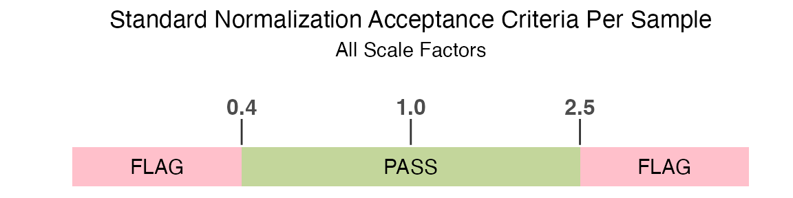

Pre-Processing SomaScan
SomaScan Bioinformatics Team, Standard BioTools, Inc.
Source:vignettes/articles/pre-processing.Rmd
pre-processing.RmdOverview
SomaDataIO contains functionality to prepare a SomaScan
.adat data file containing microarray-based relative fluorescent units
(RFUs) for analysis. The typical data analysis path includes several
steps of pre-processing, including:
- Filtering features
- Filtering samples
- Data QC
- Transformations
This article will walk through why these pre-processing
steps are recommended prior to executing an analysis on SomaScan data,
along with how these steps can be performed using the
SomaDataIO package.
Filtering Features
The goal of this pre-processing step is to remove features (SeqIds) typically not useful for analysis from a SomaScan dataset, while also retaining relevant features that will enable broad discovery during downstream analysis.
The filtering logic typically used for protein features (i.e. SOMAmer Reagents) is:
Type == "Protein" & Organism == "Human"What information does this logic convey? It indicates that only
human protein features from the raw SomaScan data set
should be retained. This can be accomplished by filtering on the ADAT
Type attribute, which represents the SOMAmer target type.
This will be used in conjunction with the Organism
attribute, which represents the organism from which the protein
originated.
These two attributes (Type and Organism)
can be accessed via SomaDataIO::getAnalyteInfo(). This
function retrieves the analyte annotation data (i.e. the column
metadata, or COL_DATA) that appears above the protein
measurements in the ADAT file, and returns it in a
data.frame format.
Note: The example_data object used in this vignette
is a V4.0 plasma ADAT. Other matrices or versions of ADATs may contain
expanded feature sets. For more information about the format and content
of an ADAT, please reference the SomaLogic-Data
GitHub repository.
To retrieve the column metadata annotations for the data set:
annots <- getAnalyteInfo(example_data)We can now check the contents of the Type and
Organism attributes, which can be accessed as columns of a
data frame once extracted with getAnalyteInfo():
annots |> count(Type) |> arrange(desc(n))
#> # A tibble: 7 × 2
#> Type n
#> <chr> <int>
#> 1 Protein 5207
#> 2 Non-Human 24
#> 3 Spuriomer 20
#> 4 Hybridization Control Elution 12
#> 5 Non-Biotin 10
#> 6 Deprecated 7
#> 7 Non-cleavable 4
annots |> count(Organism) |> arrange(desc(n))
#> # A tibble: 14 × 2
#> Organism n
#> <chr> <int>
#> 1 Human 5032
#> 2 Mouse 228
#> 3 Aequorea victoria (Jellyfish) 3
#> 4 African clawed frog 3
#> 5 Heloderma suspectum (Gila monster) 3
#> 6 Hornet 3
#> 7 Thermus thermophilus 3
#> 8 Photinus pyralis (North American firefly) 2
#> 9 Sambucus nigra (European elder) 2
#> 10 Cyanidium caldarium 1
#> 11 Geobacillus stearothermophilus (Bacillus stearothermophilus) 1
#> 12 Rhizobium meliloti (Ensifer meliloti) (Sinorhizobium meliloti) 1
#> 13 isolate BEN 1
#> 14 isolate LW123 1As described in the filtering strategy above, we only want to retain
the features for which Type == "Protein", indicating that
the feature is related to a human protein. In the same filtering step,
we can also specify that we only want to retain proteins found in humans
(Organism == "Human"). In some versions of the assay there
are SeqIds labeled “Internal Use Only” which are not intended for
downstream analysis and can also be removed. This can be performed using
dplyr::filter():
human_prots <- getAnalyteInfo(example_data) |>
filter(Type == "Protein" & Organism == "Human") |>
filter(!grepl("^Internal Use Only", TargetFullName))
length(human_prots$SeqId)
#> [1] 4979The original dataset (example_adat) contained 5284
analytes; after filtering for human proteins and removing 305 features
as described above, it contains 4979 analytes.
Remember that the human_prots object is not an ADAT, but
rather a data.frame representing the column metadata that
corresponds to the example_data ADAT object. We must now
filter the example_data object to match the filtering
performed on the human_prots object.
# Identify SeqIds that differ between the data sets
discard <- setdiff(grep("^seq\\.", colnames(example_data), value = TRUE),
human_prots$AptName)
# Discard non-human, non-protein features
filt_data <- example_data |>
dplyr::select(-all_of(discard))This data set now contains only human proteins.
Flagged Features
Our human protein analyte annotations object human_prots
contains a single column, called ColCheck, that can be used
for filtering flagged features from ADAT datasets. This column contains
the QC acceptance criteria for all plates/sets. The standard QC
acceptance criteria used to determine if a feature is flagged is if the
QC ratio by plate (aggregate across all plates) is within the acceptance
range of 0.8 to 1.2:

Again, please see SomaLogic-Data for more details.
human_prots |> count(ColCheck)
#> # A tibble: 2 × 2
#> ColCheck n
#> <chr> <int>
#> 1 FLAG 214
#> 2 PASS 4765214 human protein features in filt_data were flagged in
this column check, and are marked with a FLAG value. The
presence of a FLAG value indicates the SeqId for one of the
QC control samples was outside the range shown above on at least one
plate. The total number of SeqIds outside this range can be used to
assess potential issues with runs or studies, however a
FLAG value does not necessarily indicate a problem with the
signal for a specific analyte in the study samples. Therefore, these
features should not be filtered out of the dataset as
part of standard pre-processing.
Filtering Samples
The next pre-processing step to consider is filtering samples. A
typical data analysis is focused on only the study samples within the
ADAT file. The SampleType column in the
filt_data object can be used to filter down to the study
samples only.
filt_data |> count(SampleType)
#> # A tibble: 4 × 2
#> SampleType n
#> <chr> <int>
#> 1 Buffer 6
#> 2 Calibrator 10
#> 3 QC 6
#> 4 Sample 170An ADAT file will also include buffer, calibrator and QC samples. It is recommended to remove these samples prior to an analysis.
filt_data <- filt_data |>
filter(SampleType == "Sample")The filt_data object now has 170 study samples, after
removing the 10 calibrator samples (replicate controls for combining
data across runs), 6 QC samples (replicate controls used to assess run
quality), and 6 buffer samples (no protein controls).
Flagged Samples
An ADAT file contains a single column, called RowCheck,
that can be used for filtering out flagged samples that do not pass a
pre-defined normalization acceptance criteria.
The standard normalization acceptance criteria used to determine if a
sample is flagged by the RowCheck column is if any
of the rowwise normalization scale factors are outside of the
acceptance range of 0.4 to 2.5:

filt_data |>
count(RowCheck) |>
mutate(percent = n / sum(n) * 100)
#> # A tibble: 2 × 3
#> RowCheck n percent
#> <chr> <int> <dbl>
#> 1 FLAG 2 1.18
#> 2 PASS 168 98.8Note 2 samples in filt_data are flagged with this row
check, and are marked with a FLAG value.
# pull normalization scale factor variable names from ADAT
norm_vars <- grep("^[Nn]orm[Ss]cale|^Med\\.Scale\\.",
names(filt_data), value = TRUE)
filt_data |>
filter(!RowCheck == "PASS") |>
dplyr::select(SampleId, all_of(norm_vars)) |>
as.data.frame()
#> SampleId NormScale_20 NormScale_0_005 NormScale_0_5
#> 258495800110_3 126 0.3700948 1.064435 0.9836240
#> 258495800109_1 147 0.2891420 1.111629 0.9634776We can see that these samples each have a normalization scale factor
from at least one dilution bin that fall below the standard accepted
range. Filtering samples based on the default RowCheck
column will drop these samples from filt_data.
filt_data <- filt_data |>
filter(RowCheck == "PASS")Note that normalization to a reference may result in scaling bias in
certain scenarios. It is recommended to check the flag rate using the
default acceptance criteria from RowCheck, and if > 10%
of samples are flagged, further evaluation may be needed.
Depending on your data and experiment, it may be reasonable to keep
samples with FLAG values, particularly those samples close
to the acceptance criteria boundary. The FLAG value
indicates non-conformance to a reference (either study-specific or
external such as ANML), and further evaluation is encouraged to assess
if those samples should be considered true outliers for a given study
and removed.
Sample Level Outliers by RFU
It is also important to evaluate if there are any sample-level
outliers by RFU measurements. For standard plasma and serum studies
Standard BioTools’ recommended outlier definition is any sample where
>= 5% of RFU measurements exceed 6 median absolute
deviations (MADs) and 5x fold-change from median signal.
This filter is typically appropriate for studies on plasma, serum, and other biological matrices generally exhibiting homeostatic characteristics. For studies on matrices such as tissue homogenate, cell culture, or study designs containing client-provided background lysis buffer controls (or similar), this filter will likely not be appropriate.
# filt_data does not have any outliers by default
# create a "fake" outlier sample as an example
apts <- getAnalytes(filt_data)
filt_data[12, apts[1:600]] <- filt_data[12, apts[1:600]] * 100 # 600 apts ~ 12%We can identify plasma and serum outlier samples using this
definition with the calcOutlierMap() function.
om <- calcOutlierMap(filt_data)
plot(om)
The one sample in filt_data that we modified in the
previous code chunk was identified as an outlier by RFU measurements
with the *.
The getOutlierIds() function is useful for extracting
the sample IDs that were flagged as outliers in the plot. These sample
IDs should be investigated further and possibly considered for removal
prior to analysis.
rfu_outliers <- getOutlierIds(om)
rfu_outliers
#> idx
#> 1 12
# drop one outlier sample
filt_data <- filt_data |>
filter(!dplyr::row_number() %in% rfu_outliers$idx)Data QC
The goal of this step is to assess if the normalization applied to the input ADAT is appropriate for the study. To accomplish this, we can check the association of normalization scale factors with any endpoint of interest.
As an example, we will create a status_class two-group
endpoint variable and a status_cont continuous endpoint
variable in the filt_data ADAT.
# create "status" endpoints as examples
filt_data <- withr::with_seed(101,
filt_data |>
mutate(status_cont = runif(nrow(filt_data))) |>
mutate(status_class = ifelse(status_cont > 0.5, "treatment", "control"))
)Plot the normalization scale factors by the status_class
endpoint.
filt_data |>
select(SampleId, status_class, all_of(norm_vars)) |>
tidyr::pivot_longer(!c(SampleId, status_class),
names_to = "Normalization Scale Factor",
values_to = "Value") |>
ggplot(aes(x = `Normalization Scale Factor`, y = Value, fill = status_class)) +
geom_boxplot() +
ylim(0, 2.6) +
geom_hline(yintercept = 0.4, linetype = "dashed", color = "red") +
geom_hline(yintercept = 2.5, linetype = "dashed", color = "red") +
theme_bw() +
scale_fill_manual(values = c("#4067E2", "#59CFDB"))There does not appear to be any visual normalization bias by
status_class. This conclusion is confirmed by the results
from t-tests.
norm_vars |>
as_tibble() |>
mutate(
formula = map(norm_vars, ~ as.formula(paste(.x, "~ status_class"))), # create formula
t_test = map(formula, ~ stats::t.test(.x, data = filt_data)), # fit t-tests
t_stat = map_dbl(t_test, "statistic"), # pull out t-statistic
p.value = map_dbl(t_test, "p.value"), # pull out p-values
fdr = p.adjust(p.value, method = "BH") # FDR for multiple testing
)
#> # A tibble: 3 × 6
#> value formula t_test t_stat p.value fdr
#> <chr> <list> <list> <dbl> <dbl> <dbl>
#> 1 NormScale_20 <formula> <htest> 0.604 0.547 0.585
#> 2 NormScale_0_005 <formula> <htest> -1.58 0.117 0.351
#> 3 NormScale_0_5 <formula> <htest> -0.548 0.585 0.585Now, check for normalization bias by the continuous endpoint
status_cont.
filt_data |>
select(SampleId, status_cont, all_of(norm_vars)) |>
tidyr::pivot_longer(!c(SampleId, status_cont),
names_to = "Normalization Scale Factor",
values_to = "Value") |>
ggplot(aes(x = status_cont, y = Value, color = `Normalization Scale Factor`)) +
geom_point() +
ylim(0, 2.6) +
geom_hline(yintercept = 0.4, linetype = "dashed", color = "red") +
geom_hline(yintercept = 2.5, linetype = "dashed", color = "red") +
theme_bw() +
scale_color_manual(values = c("#4067E2", "#59CFDB", "#DB40EF")) +
facet_wrap(~`Normalization Scale Factor`) +
theme(legend.position = "none")
There does not appear to be any visual normalization bias by the
status_cont continuous endpoint. This conclusion is
confirmed by the results from correlation tests.
norm_vars |>
as_tibble() |>
mutate(
formula = map(norm_vars, ~ as.formula(paste("~ status_cont +", .x))), # create formula
cor = map(formula, ~ stats::cor.test(.x, data = filt_data)), # calculate correlations
pearson = map_dbl(cor, "statistic"), # pull out test statistic
p.value = map_dbl(cor, "p.value"), # pull out p-values
fdr = p.adjust(p.value, method = "BH") # FDR for multiple testing
)
#> # A tibble: 3 × 6
#> value formula cor pearson p.value fdr
#> <chr> <list> <list> <dbl> <dbl> <dbl>
#> 1 NormScale_20 <formula> <htest> 0.132 0.895 0.895
#> 2 NormScale_0_005 <formula> <htest> 0.674 0.501 0.853
#> 3 NormScale_0_5 <formula> <htest> 0.571 0.569 0.853If there is a considerable normalization bias observed in your ADAT, an alternate normalization should be used for univariate analyses, and any planned analyses may need to be modified to account for this bias.
Transformations
SomaScan data is typically delivered to end users as normalized, untransformed RFUs. Many analytic operations are best performed using these untransformed values, including fold-change calculations, bridging RFUs across assay versions, calculating coefficients of variation (CV) for replicate samples, and comparing study-specific RFUs to population reference values provided in the SomaScan Menu Tool.
While many operations are conducted on untransformed RFU values, it
is important to note that for each SeqId, the distribution of biological
sample RFUs generally follows a right-tailed, log-normal distribution.
Let’s take a look at the distribution of one example analyte feature,
seq.10023.32, before any transformations are applied.
filt_data |>
ggplot(aes(x = seq.10023.32)) +
geom_density(fill = "#59CFDB", color = "#59CFDB", alpha = 0.8) +
theme_bw()
There is a log-normal distribution, with a long right-tail in the distribution of raw RFU values, and this is the assumed distribution of untransformed analytes provided in an ADAT file.
Log-10
Performing a log10 transformation is recommended prior to using methods that assume normally distributed measurements. Please note that real-world data rarely conforms exactly to ideal distributional assumptions and analysts should feel free to explore alternative transformations that may better suit their specific data and statistical test assumptions. However, we have found that the log10 transformation is broadly appropriate for standard parametric analyses across the SomaScan menu.
The SomaDataIO package provides a log10()
math generic function for the soma_adat class, which will
log-10 transform all SOMAmer analyte features within an ADAT file.
filt_data <- filt_data |>
log10() Centering and Scaling (Z-Score)
A further transformation to consider applying to the analyte features is a Z-score transformation if your experiment includes any multivariate analysis. To compare relative differential signal across analyte features, centering and scaling all of the RFU values should be applied through a Z-score transformation:
where is the observed value, , is the mean of the sample, and is the standard deviation of the sample. The z-score transformation is typically performed on log10-transformed RFUs.
This can be done by creating a simple function,
center_scale(), and applying it to all analytes in
filt_data.
# center/scale
center_scale <- function(.x) { # .x = numeric vector
out <- .x - mean(.x) # center
out / sd(out) # scale
}
filt_data <- filt_data |>
mutate(across(getAnalytes(filt_data), center_scale))Now, re-examine the distribution of the same analyte feature
seq.10023.32:
filt_data |>
ggplot(aes(x = seq.10023.32)) +
geom_density(fill = "#59CFDB", color = "#59CFDB", alpha = 0.8) +
theme_bw()
After applying the transformations, the distribution of all of the pre-processed analyte features should look similar to the above. If true modal behavior of any analytes are observed, it may require secondary assessment and further evaluation.
While centering and scaling standardizes the RFU distributions across all SeqIds for multivariate analysis, it is important to understand that this does not enable meaningful comparison of expression values between different SeqIds. Take, for instance, hypothetical SeqId A with a z-score of 2 and hypothetical SeqId B with a z-score of -1. One cannot infer that the protein target of SeqId A was present at a higher concentration than the target of SeqId B in the original sample prep. All comparisons should be made between sample groups within a given SeqId. The RFU value, as well as log10 RFU and z-score, is dependent on variety of analyte-specific factors such as the SOMAmer Reagent-target protein binding kinetics, the dilution bin of the SOMAmer reagent, NHS-biotin conjugation efficiency of the SOMAmer, and other factors intrinsic to the SOMAmer Reagent within the SomaScan assay.
preProcessAdat() function
The preProcessAdat() function is available to perform
the steps outlined in this vignette. By default, it will filter features
and samples using the standard QC and normalization acceptance criteria
described earlier, but will not drop sample-level RFU outliers.
It also has the option to perform log-10 and center & scale
transformations to the untransformed RFU values. If data QC plots by
endpoints or clinical variables are desired,the names of the variables
should be explicitly passed to the data.qc argument. Please
see the preProcessAdat() function documentation for more
details.
# first recreate outlier and endpoints, and add to original example_data object
apts <- getAnalytes(example_data)
example_data[12, apts[1:600]] <- example_data[12, apts[1:600]] * 100 # 600 apts ~ 12%
example_data <- withr::with_seed(101,
example_data |>
mutate(status_cont = runif(nrow(example_data))) |>
mutate(status_class = ifelse(status_cont > 0.5, "treatment", "control"))
)
processed_data <- preProcessAdat(adat = example_data,
filter.features = TRUE,
filter.controls = TRUE,
filter.qc = TRUE,
filter.outliers = FALSE,
data.qc = c("status_class",
"status_cont"),
log.10 = FALSE,
center.scale = FALSE)
#> ✔ 305 non-human protein features were removed.
#> → 214 human proteins did not pass standard QC
#> acceptance criteria and were flagged in `ColCheck`. These features
#> were not removed, as they still may yield useful information in an
#> analysis, but further evaluation may be needed.
#> ✔ 6 buffer samples were removed.
#> ✔ 10 calibrator samples were removed.
#> ✔ 6 QC samples were removed.
#> ✔ 2 samples flagged in `RowCheck` did not
#> pass standard normalization acceptance criteria (0.4 <= x <= 2.5)
#> and were removed.
#> → Data QC plots were generated:
#> $status_class
#>
#> $status_cont
processed_data
#> ══ SomaScan Data ══════════════════════════════════════════════════════
#> SomaScan version V4 (5k)
#> Signal Space 5k
#> Attributes intact ✓
#> Rows 168
#> Columns 5015
#> Clinical Data 36
#> Features 4979
#> ── Column Meta ────────────────────────────────────────────────────────
#> ℹ SeqId, SeqIdVersion, SomaId, TargetFullName, Target,
#> ℹ UniProt, EntrezGeneID, EntrezGeneSymbol, Organism, Units,
#> ℹ Type, Dilution, PlateScale_Reference, CalReference,
#> ℹ Cal_Example_Adat_Set001, ColCheck,
#> ℹ CalQcRatio_Example_Adat_Set001_170255, QcReference_170255,
#> ℹ Cal_Example_Adat_Set002,
#> ℹ CalQcRatio_Example_Adat_Set002_170255, Dilution2
#> ── Tibble ─────────────────────────────────────────────────────────────
#> # A tibble: 168 × 5,016
#> row_names PlateId PlateRunDate ScannerID PlatePosition SlideId
#> <chr> <chr> <chr> <chr> <chr> <dbl>
#> 1 258495800012_3 Example… 2020-06-18 SG152144… H9 2.58e11
#> 2 258495800004_7 Example… 2020-06-18 SG152144… H8 2.58e11
#> 3 258495800010_8 Example… 2020-06-18 SG152144… H7 2.58e11
#> 4 258495800003_4 Example… 2020-06-18 SG152144… H6 2.58e11
#> 5 258495800009_4 Example… 2020-06-18 SG152144… H5 2.58e11
#> 6 258495800012_8 Example… 2020-06-18 SG152144… H4 2.58e11
#> 7 258495800001_3 Example… 2020-06-18 SG152144… H3 2.58e11
#> 8 258495800004_8 Example… 2020-06-18 SG152144… H2 2.58e11
#> 9 258495800001_8 Example… 2020-06-18 SG152144… H12 2.58e11
#> 10 258495800009_8 Example… 2020-06-18 SG152144… H10 2.58e11
#> # ℹ 158 more rows
#> # ℹ 5,010 more variables: Subarray <dbl>, SampleId <chr>,
#> # SampleType <chr>, PercentDilution <int>, SampleMatrix <chr>,
#> # Barcode <lgl>, Barcode2d <chr>, SampleName <lgl>,
#> # SampleNotes <lgl>, AliquotingNotes <lgl>, …
#> ═══════════════════════════════════════════════════════════════════════Questions
As always, if you have any pre-processing questions, we are here to help. Please reach out to us via:
- GitHub SUPPORT
- Global Scientific Engagement Team: techsupport@somalogic.com
- General SomaScan inquiries: support@somalogic.com